Обзор
Цель этой статьи — дать более глубокое понимание того, как различные компоненты CryMannequin сочетаются друг с другом и как их использовать.
Поскольку примеры могут быть доступным способом достижения этой цели, мы опишем, как использовать CryMannequin для управления состоянием анимации объекта с нуля.
Основные классы Mannequin
Ниже представлена диаграмма с обзором основных компонентов, участвующих в CryMannequin. Его цель – проиллюстрировать ключевые классы и их взаимоотношения. Это не полная диаграмма UML всех классов, а скорее полезное дополнение к этой статье, где все они используются на практике. На данном этапе нет необходимости полностью понимать все концепции, поскольку цель этой статьи — представить их в том виде, в котором они используются.
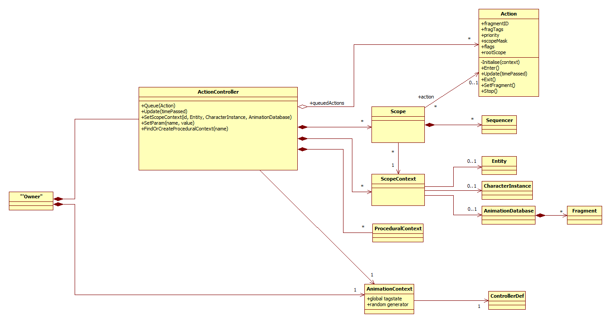
Mannequin Настройка
Нашей первой целью будет возможность анимировать персонажа, который имеет два логических состояния анимации: бездействие и движение.
Проектирование структуры содержания
Первое, что мы сделаем, это решим, как мы разделим нашего персонажа на ряд логических частей. Мы сможем управлять каждой логической частью персонажа напрямую, то есть менять состояние его анимации.
Для каждой из этих логических частей мы создаем то, что называется Область применения. Области — это то место, где запускаются фрагменты.
В нашем простом примере нам пока не нужна большая сложность. У нас будет одна сущность с одним экземпляром персонажа, и мы будем переключаться между состояниями логической анимации простоя и движения. На данный момент мы не хотим иметь возможность отдельно контролировать то, что происходит в верхней части тела персонажа. У нас будет достаточно контроля, если мы сможем решить, что будет играть на всем теле персонажа. Поэтому на данный момент будет достаточно одной области. Мы назовем его FullBody.
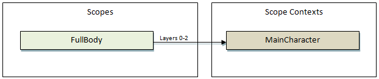
Области сопоставлены с сущностью, экземпляром персонажа и база данных анимации через Контекст области действия. Мы создадим это сопоставление с помощью кода во время настройки объекта, обращаясь к нему по имени (MainCharacter). Эти свойства контекста области действия могут меняться во время выполнения, поэтому можно в любой момент поменять местами сущность, экземпляр персонажа или базу данных анимации, в которой мы воспроизводим анимацию (например, мы использовали это при замене оружия в Crysis3).
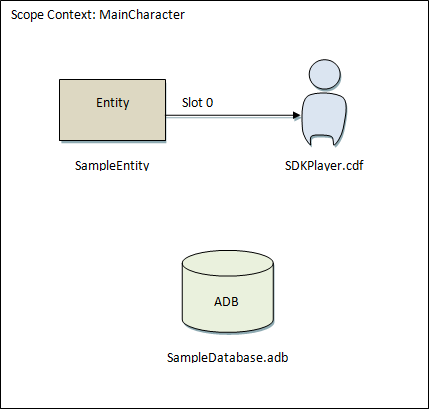
Мы всегда можем добавить больше областей позже, когда нам понадобятся более сложные настройки или чтобы получить более детальный контроль над персонажем. Например, если нам нужна установка, в которой у нас есть все тело, верхняя часть тела и объект оружия, которым мы хотим управлять отдельно и иметь возможность синхронизировать анимацию, мы могли бы иметь три области действия в нашем персонаже-манекене: один для управления фрагментами всего тела, один для верхней части тела и последний для оружия. Обратите внимание, как слои анимации которые определяют, какие слои экземпляра персонажа в контексте области видимости мы используем, являются свойством области видимости.
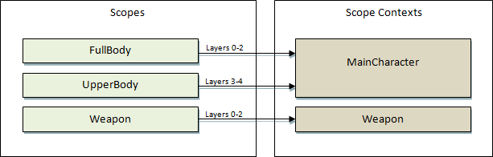
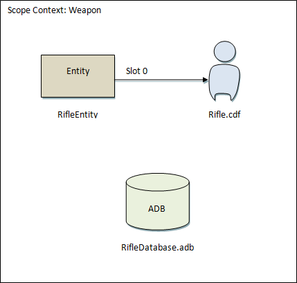
Создание определения контроллера
Структура персонажа, которым мы будем управлять с помощью манекена, задается в том, что мы называем Определение контроллера. Обычно мы загружаем определения контроллеров из файлов XML.
В определениях контроллера мы указываем, что Теги составляют его глобальное состояние, какие состояния анимации (мы обычно будем называть состояние анимации FragmentId), и как персонаж разбивается на области.
Мы постараемся создать как можно большую часть этой настройки с помощью редактора, но в настоящее время есть некоторые шаги, которые требуют небольшого ручного редактирования XML.
Ниже приведен пример минимального файла определения контроллера, который нам понадобится. Обычно мы помещаем файлы определений контроллера в папку Animations/Mannequin/ADB папка.
Animations/Mannequin/ADB/sampleControllerDefs.xml:
<ControllerDef>
<Tags filename="Animations/Mannequin/ADB/sampleTags.xml"/>
<Fragments filename="Animations/Mannequin/ADB/sampleFragmentIds.xml"/>
<ScopeDefs>
<FullBody layer="0" numLayers="3" context="MainCharacter"/>
</ScopeDefs>
</ControllerDef>
Создание файлов определения тегов
Имена файлов <Tags> и <Fragments> указывают на глобальные теги и файлы определений fragmentId, которые будет использовать персонаж. Чтобы определение контроллера было действительным, нам необходимо, чтобы оба файла существовали и были действительными файлами определения тегов.
Редактор манекенов содержит редактор определений тегов, который мы можем использовать для создания двух файлов определений тегов. На данный момент мы оставим эти два файла пустыми.
Откройте редактор Mannequin, щелкнув его значок на панели инструментов (он также находится под Просмотр -> Просмотры -> Редактор Mannequin).
редактор определений тегов находится в разделе «Файл->Редактор определения тегов...».
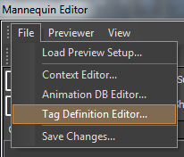
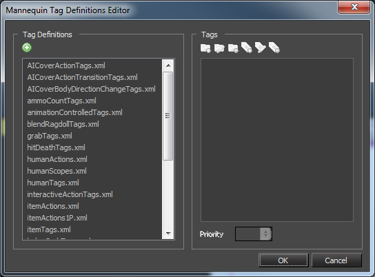
Чтобы создать новое определение тега, нам нужно всего лишь нажать кнопку «Создать новое определение тега».
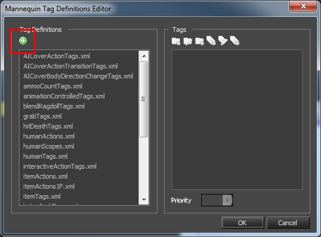
В приглашении нам потребуется указать имя файла (без расширения) нужного файла определения тега. По умолчанию он будет помещен в папку Animations/Mannequin/ADB папка.
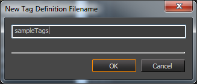
Нам следует повторить этот шаг для двух файлов, которые нам нужно создать: «sampleTags» и «sampleFragmentIds».
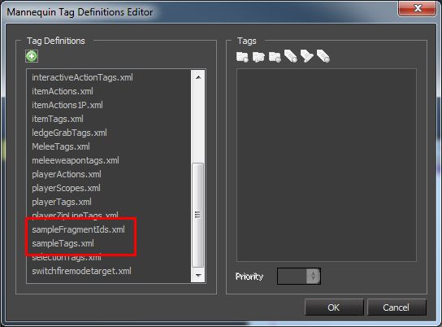
Содержимое файлов должно выглядеть примерно так:
Animations/Mannequin/ADB/sampleTags.xml:
<TagDefinition version="2" />
Animations/Mannequin/ADB/sampleFragmentIds.xml:
<TagDefinition version="2" />
Редактор определений тегов можно использовать для добавления тегов вручную в файл определения тегов fragmentIds, но нам никогда не понадобится этого делать: редактор будет делать это скрытно каждый раз, когда мы добавляем FragmentIds в основной интерфейс.
Определения тегов, которые не заканчиваются на имя «tags.xml», не будут отображаться в редакторе определений тегов, если не отключена опция «Фильтровать теги».
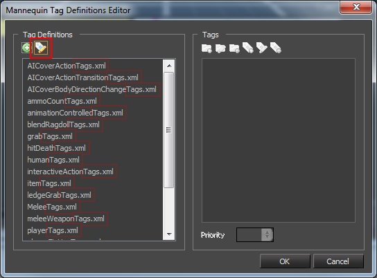
Определения области применения
Давайте еще раз посмотрим на файл определения контроллера и сосредоточимся на Определение области действия настройка.
<ScopeDefs>
<FullBody layer="0" numLayers="3" context="MainCharacter"/>
</ScopeDefs>
Каждая запись в разделе определения области объявляет одну область.
Имя, используемое для тега XML, в примере «FullBody», будет именем, присвоенным области.
Атрибут context (здесь «MainCharacter») указывает, к какому контексту области относится данная область. Со стороны кода мы позже назначим, какой объект и экземпляр символа связаны с этим контекстом области. Новый контекст области создается неявно путем его объявления, и имя важно, поскольку мы будем ссылаться на него позже со стороны кода, когда настроим сущность. Различные области могут ссылаться на один и тот же контекст области.
Атрибуты Layer и numLayers указывают, на каком именно слои экземпляра персонажа в контексте области действия MainCharacter, в котором фрагменты будут воспроизводить анимацию. В данном случае мы берем слои 0, 1 и 2.
Можно создать области, не допускающие анимацию, указав 0 numLayers. Всегда можно воспроизвести процедурные клипы на прицеле.
Максимальное количество слоев в экземпляре персонажа — 16 (пронумеровано от 0 до 15).
Создание файла настройки предварительного просмотра редактора
Создание пустого файла настройки предварительного просмотра
Последняя часть редактирования XML, которую нам нужно сделать на данный момент, — это создать предварительный просмотр файла настройки. Для этого нам просто нужно, чтобы он указывал на файл определения контроллера, который мы только что создали.
Animations/Mannequin/Preview/MannequinSamplePreview.xml:
<MannequinPreview>
<controllerDef filename="Animations\Mannequin\ADB\sampleControllerDefs.xml"/>
</MannequinPreview>
Теперь мы можем загрузить файл предварительного просмотра в редакторе Mannequin, зайдя в Файл -> Загрузить настройки предварительного просмотра... и выбираем наш файл предварительного просмотра.
Представления будут пустыми, поскольку мы ни разу не заполняли контексты областей для настройки предварительного просмотра. Нам нужно сделать это, чтобы указать файлы базы данных персонажей или анимации, которые мы будем использовать. Мы будем делать это с помощью Редактор контекста.
Предварительный просмотр настройки контекста области файла
Чтобы открыть Редактор контекста пойти в Файл -> Редактор контекста...
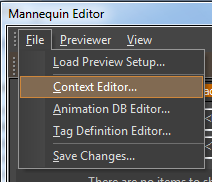
Отображение контекстов в редакторе является чем-то локальным для файлов предварительного просмотра. На стороне редактора это имитирует то, что мы будем делать в нашем игровом коде при настройке контекстов области действия.
У вас также может быть много разных настроек предварительного просмотра, указывающих на один и тот же контроллер. Он используется в персонаже SDK, где есть файл предварительного просмотра от 1-го лица, который загружает только модель от 1-го лица, и файл предварительного просмотра от 3-го лица, который загружает только модель от 3-го лица.
Для нашего персонажа у нас есть один контекст области действия, который мы назвали MainCharacter. Чтобы начать создавать для него фрагменты, нам нужно связать с ним конкретный экземпляр персонажа и базу данных анимации.
Мы можем создать новое сопоставление, нажав кнопку «Новое».
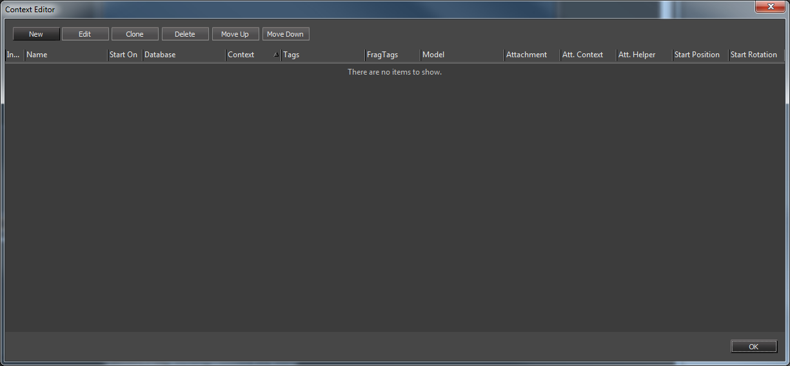
Следующее окно позволяет нам редактировать свойства сопоставления.
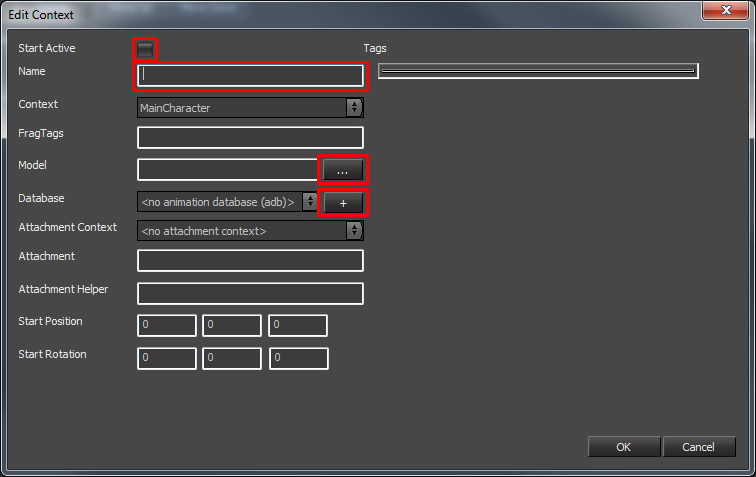
Имя — это то, как мы будем идентифицировать сопоставление контекста конкретной области на стороне редактора Mannequin. Он является локальным для файла предварительного просмотра, поэтому из кода игры мы не будем ссылаться на него. Мы увидим это в контекстном раскрывающемся меню в редакторе и рядом с именами областей в Предварительный просмотр. В данном случае мы называем его MainCharacter, но мы можем дать ему любое имя (например, SDKPlayer) или изменить его позже без каких-либо последствий.
В более продвинутых настройках мы можем иметь несколько сопоставлений для одного и того же контекста области и менять их местами в редакторе, чтобы иметь возможность предварительно просмотреть, как другие персонажи работают с этой настройкой определения контроллера, а также создавать и редактировать фрагменты для базы данных анимации, связанной с этим контекстом области. Например, мы могли бы иметь контекст области действия для оружия и настройку, в которой мы можем просматривать различное оружие без необходимости менять файлы предварительного просмотра, просто изменив, какое отображение для этой области действия активно. В этом конкретном случае мы можем даже заставить редактор выполнять эту замену автоматически на основе активных тегов персонажа, чтобы сделать редактирование и предварительный просмотр более удобными.
Для выбора модели нажмите кнопку «...», появится диалоговое окно выбора файла. Для этого примера мы выбрали образ игрока SDK, которого можно найти в разделе Objects/characters/human/sdk_player/sdk_player.cdf.
Нам также необходимо указать, какая база данных будет использоваться для хранения фрагментов. Поскольку у нас пока нет баз данных, мы создадим новую, нажав кнопку «+». Это запросит у нас имя, которое мы хотим дать новой базе данных. В нашем примере мы назовем его sampleDatabase.
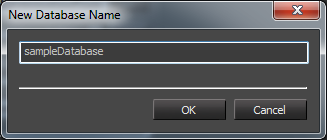
Флажок «Начать активный» гарантирует, что в средстве предварительного просмотра это сопоставление контекста области включено по умолчанию. Если этот флажок не установлен, нам нужно будет связать его активацию с определенным набором тегов или вручную настроить его в средстве предварительного просмотра, щелкнув правой кнопкой мыши область и выбрав сопоставление, которое мы хотим активировать. Для нашего примера удобнее следить за тем, чтобы это сопоставление всегда было активным, поскольку мы всегда хотим иметь возможность его просмотреть.
После того, как мы установили имя, модель и базу данных, мы указали достаточно информации, чтобы создать допустимое сопоставление и начать создавать фрагменты.
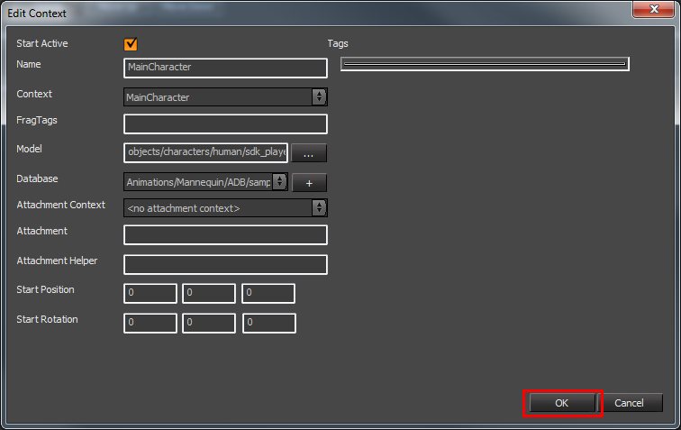
Закрытие редактора контекста автоматически сохранит изменения в файле предварительного просмотра.
Редактор Mannequin теперь должен показать нам персонажа игрока SDK, загруженного в центральное окно просмотра, и имя, которое мы дали контексту в редакторе контекста, выбранном в качестве текущего контекста.
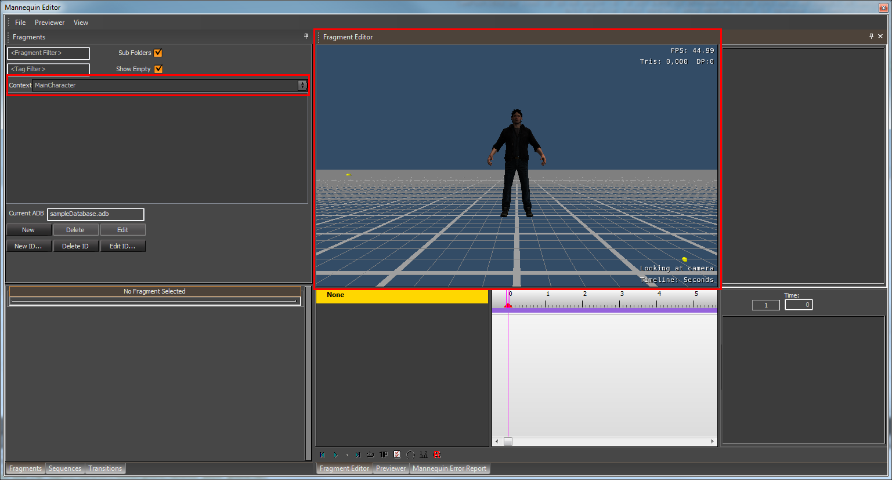
Создание начальных фрагментов
Теперь мы можем добавить нужный нам fragmentIds. Мы назовем их «Idle» и «Motion», чтобы соответствовать состояниям анимации, которые мы будем запрашивать через код.
Подробное объяснение того, как создать fragmentIds и фрагменты ознакомьтесь с соответствующими статьями или обучающие статьи.
Получив fragmentIds, мы создаем фрагмент для каждого.
Простой: 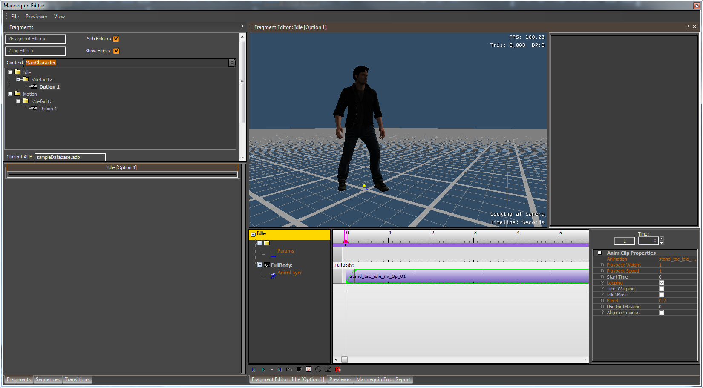
Движение: 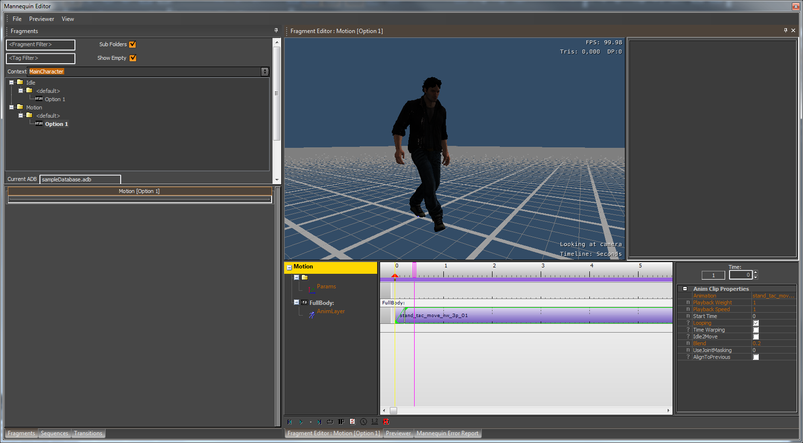
Создание нашей сущности
Инициализация и настройка
Объекты, контролируемые Mannequin, получают доступ к манекену через Контроллер действий. Когда сущность хочет воспроизвести фрагмент, она создает действие и ставит его в очередь на контроллере действий. Действия также могут сами запускать фрагменты, поэтому можно писать действия с логикой, управляющей воспроизведением фрагмента. Рекомендуется писать только логику, которая отвечает за логику выбора анимации в Действиях. Никаких технических ограничений на него нет, но полагаться на Action Controller как на платформу действий для игровой логики не очень рекомендуется, поскольку он настроен на воспроизведение анимации.
В любом случае, прежде чем мы сможем запустить действия и воспроизвести фрагменты нашей сущности, необходимо настроить код.
Организация несет ответственность за отслеживание своего контролера действий и контекст анимации (см. также диаграмму UML в начале этой статьи), поэтому где-то в нашей структуре данных для сущности мы должны владеть каждой из них:
// MannequinSample.h:
class CMannequinSample
: public CGameObjectExtensionHelper< CMannequinSample, IGameObjectExtension >
{
...
private:
IActionController* m_pActionController;
SAnimationContext* m_pAnimationContext;
...
};
// MannequinSample.cpp:
CMannequinSample::CMannequinSample()
: m_pAnimationContext( NULL )
, m_pActionController( NULL )
{
}
CMannequinSample::~CMannequinSample()
{
SAFE_RELEASE( m_pActionController );
SAFE_DELETE( m_pAnimationContext );
}
Инициализация контроллера действий и контекста анимации (например, его можно разместить в PostInit) может выглядеть примерно так, как показано в следующем фрагменте кода:
void CMannequinSample::PostInit( IGameObject* pGameObject )
{
...
pEntity->LoadCharacter( 0, "Objects/characters/human/sdk_player/sdk_player.cdf" );
...
// Mannequin Initialization
IMannequin& mannequinInterface = gEnv->pGame->GetIGameFramework()->GetMannequinInterface();
IAnimationDatabaseManager& animationDatabaseManager = mannequinInterface.GetAnimationDatabaseManager();
// Loading the controller definition that we previously created.
// This is owned by the animation database manager
const SControllerDef* const pControllerDef = animationDatabaseManager.LoadControllerDef( "Animations/Mannequin/ADB/sampleControllerDefs.xml" );
if ( pControllerDef == NULL )
{
CryWarning( VALIDATOR_MODULE_GAME, VALIDATOR_ERROR, "Failed to load controller definition for MannequinSample." );
return;
}
// Creation of the animation context.
CRY_ASSERT( m_pAnimationContext == NULL );
m_pAnimationContext = new SAnimationContext( *pControllerDef );
// Creation of the action controller
CRY_ASSERT( m_pActionController == NULL );
m_pActionController = mannequinInterface.CreateActionController( pEntity, *m_pAnimationContext );
// Scope Context Setup.
// In our controller definition we have a scope context that we called MainCharacter
// The Scope Context Setup will associate this entity, the character instance we loaded at the beginning,
// and the animation database where we saved our fragments to this scope context.
const TagID mainCharacterScopeContextId = m_pAnimationContext->controllerDef.m_scopeContexts.Find( "MainCharacter" );
if ( mainCharacterScopeContextId == TAG_ID_INVALID )
{
CryWarning( VALIDATOR_MODULE_GAME, VALIDATOR_ERROR, "Failed to find MainCharacter scope context id for MannequinSample in controller definition." );
return;
}
ICharacterInstance* const pCharacterInstance = pEntity->GetCharacter( 0 );
CRY_ASSERT( pCharacterInstance != NULL );
// Loading a database
const IAnimationDatabase* const pAnimationDatabase = animationDatabaseManager.Load( "Animations/Mannequin/ADB/sampleDatabase.adb" );
if ( pAnimationDatabase == NULL )
{
CryWarning( VALIDATOR_MODULE_GAME, VALIDATOR_ERROR, "Failed to load animation database for MannequinSample." );
return;
}
// Setting Scope contexts can happen at any time, and what entity or character instance we have bound to a particular scope context
// can change during the lifetime of an action controller.
m_pActionController->SetScopeContext( mainCharacterScopeContextId, *pEntity, pCharacterInstance, pAnimationDatabase );
...
}
Начальные фрагменты
Чтобы запустить фрагмент нашего персонажа, мы должны поставить его в очередь на контроллере действий. Вот пример фрагмента, который запускает действие по умолчанию, воспроизводящее Idle fragmentId:
const FragmentID idleFragmentId = m_pAnimationContext->controllerDef.m_fragmentIDs.Find( "Idle" );
const int actionPriority = 0;
IActionPtr pAction = new TAction< SAnimationContext >( actionPriority, idleFragmentId );
m_pActionController->Queue( pAction );
Когда мы ставим действие в очередь в контроллере действий, оно просто помещается в очередь с упорядоченным приоритетом.
Цикл обновления
В каждом кадре нам нужно будет отмечать контроллер действий, чтобы он разрешал действия, поставленные в очередь. Во время этого решения контроллеру действий необходимо просмотреть действия, поставленные в очередь, и сравнить их с действиями, установленными в областях, которые он хочет использовать, и решить, следует ли их запускать сразу или их следует отложить и оставить в очереди на более позднее время. Приоритеты действий и флаги являются неотъемлемой частью того, как это решается.
if ( m_pActionController != NULL )
{
m_pActionController->Update( frameTimeSeconds );
}
Во время вызова обновления контроллера действий и после разрешения установленные действия будут обновлены. Во время обновления анимация также ставится в очередь в системе анимации, поэтому этот фактор следует учитывать, чтобы решить, где разместить обновление контроллера действий.
Добавление вариации
Добавление случайного изменения
На этом этапе у нас нет вариаций фрагментов внутри fragmentId. Каждый раз, когда мы запускаем фрагмент Idle, мы видим одну и ту же анимацию простоя. Если бы у нас было несколько персонажей, одновременно запускающих один и тот же фрагмент, это, скорее всего, выглядело бы скучно. Мы можем добиться большего разнообразия, добавив больше фрагментов. Если мы добавим новый фрагмент в Idle fragmentId, мы увидим в браузере фрагментов, что теперь у нас есть более одной опции. Теперь, когда мы ставим в очередь фрагмент Idle, поскольку у нас есть более одного допустимого фрагмента для воспроизведения, будет выбран случайный фрагмент.
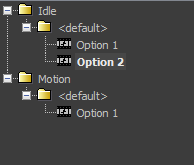
Запросы на наиболее подходящий фрагмент для воспроизведения в области видимости выполняются в базе данных анимации. При наличии нескольких допустимых фрагментов (т. е. опций) поведением по умолчанию является получение случайного фрагмента. Тем не менее, можно заставить систему выбрать конкретный вариант, специально выбрав индекс варианта. Индекс опции не обязательно должен находиться в диапазоне допустимых опций для фрагмента (он будет принудительно помещен в этот диапазон автоматически с использованием «по модулю»).
IActionPtr pAction = new TAction< SAnimationContext >( actionPriority, idleFragmentId );
pAction->SetOptionIdx( 245 ); // The default option index for an action is the special value OPTION_IDX_RANDOM.
m_pActionController->Queue( pAction );
При использовании OPTION_IDX_RANDOM каждый вариант имеет равные шансы быть выбранным.
Добавление вариаций с помощью тегов
Допустим, мы хотим, чтобы у этого персонажа было две стойки, которые мы можем назвать «Стоять» и «Приседать». Со стороны кода нам обычно не нужно выбирать состояния анимации Idle_Stand, Idle_Crouch. Это быстро становится неуправляемым, особенно потому, что наш персонаж вырастет до чего-то более сложного и, вероятно, будет иметь гораздо больше дополнительных битов информации, которые кодируют то, как персонаж должен анимироваться (например, держит ли персонаж предмет? Какой тип предмета? Какой именно предмет? Устал ли персонаж? Больно?). В большинстве случаев со стороны кода мы не хотим заботиться о таком мелкозернистом уровне детализации, мы хотим немного его абстрагировать. На самом деле нам просто нужно запросить состояние анимации ожидания или состояние анимации движения. Затем выберите лучшую анимацию, учитывая состояние нашей сущности.
Хотя параметры фрагмента полезны для разрешения различий между одинаково допустимыми фрагментами, они не предназначены для выполнения такого рода осмысленного выбора между фрагментами.
Для такого рода выделения фрагментов мы используем теги. Теги — это ключевые слова, которые мы используем, чтобы предоставить некоторую контекстную информацию нашим фрагментам для их выбора. У нас есть набор тегов, которые являются глобальными и могут использоваться всеми его фрагментами, и теги, локальные для каждого fragmentId (поэтому мы не заполняем глобальные теги полностью метками, которые используются только для фрагментов с определенным fragmentId).
Это также позволяет аниматорам помочь решить, сколько вариантов или состояний необходимо для точного изображения определенного состояния, и легко выбрать их с помощью кода, просто включив или отключив теги.
В нашем случае мы хотим пометить тегом «Приседание» фрагменты, которые следует воспроизводить только в положении сидя, а тегом «Стоять» — фрагменты, которые следует воспроизводить только в положении стоя.
При выборе фрагмента нам необходимо предоставить системе достаточно информации о том, какие теги активны, чтобы она могла воспроизвести лучший фрагмент для конкретной ситуации. Мы храним глобальные теги для нашего персонажа в контексте анимации и напрямую запрашиваем «теги, специфичные для fragmentId», когда запрашиваем fragmentId. Следующий псевдокод иллюстрирует это.
// Pseudo code
if ( crouched )
{
SetGlobalTagOnAnimationContext( "Crouch" )
}
// "Hit" is the fragmentId
// "FromLeft" and "ByExplosion" are tags specific to the "Hit" fragmentId.
QueueInActionController( "Hit", "FromLeft+ByExplosion" )
Для полноты реальный код будет выглядеть так:
CRY_ASSERT( m_pAnimationContext );
CRY_ASSERT( m_pActionController );
if ( isCrouched )
{
const TagID crouchTagId = m_pAnimationContext->state.GetDef().Find( "Crouch" );
if ( crouchTagId != TAG_STATE_INVALID )
{
m_pAnimationContext->state.Set( crouchTagId, true );
}
}
const FragmentID hitFragmentId = m_pAnimationContext->controllerDef.m_fragmentIDs.Find( "Hit" );
if ( hitFragmentId != FRAGMENT_ID_INVALID )
{
TagState hitFragmentTags = TAG_STATE_EMPTY;
const CTagDefinition* const pHitTagDefinition = pActionController->GetTagDefinition( hitFragmentId );
if ( pHitTagDefinition )
{
const TagId fromLeftTagId = pHitTagDefinition->Find( "FromLeft" );
if ( fromLeftTagId != TAG_STATE_INVALID )
{
pHitTagDefinition->Set( hitFragmentTags, fromLeftTagId, true );
}
const TagId byExplosionTagId = pHitTagDefinition->Find( "ByExplosion" );
if ( byExplosionTagId != TAG_STATE_INVALID )
{
pHitTagDefinition->Set( hitFragmentTags, byExplosionTagId, true );
}
}
const int actionPriority = 0;
IActionPtr pAction = new TAction< SAnimationContext >( actionPriority, hitFragmentId, hitFragmentTags );
m_pActionController->Queue( pAction );
}
Добавление тегов «Присесть» и «Стоять»
Мы будем использовать глобальные теги для добавления позиции. В нашем случае это информация, которая достаточно важна для того, чтобы ею могли поделиться все наши фрагменты; это оказывает очень большое визуальное влияние на позу персонажа.
Глобальные теги для определения нашего контроллера хранятся в sampleTags.xml. Мы можем редактировать их через редактор тегов, чтобы добавить новые теги «Присесть» и «Стоять».
В редакторе определений тегов выберите определение тега sampleTags.xml и нажмите кнопку «Добавить новый тег».
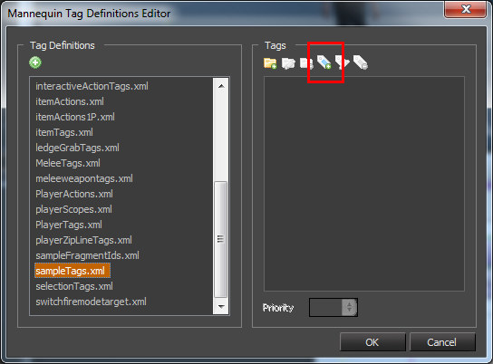
Появится запрос на присвоение имени новому тегу.
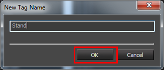
Нам понадобится тег для каждой возможной позиции, которую должен иметь персонаж.
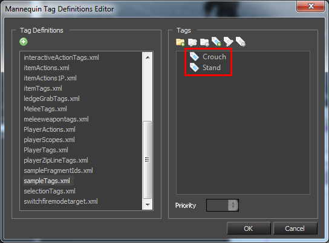
Поскольку оба тега являются взаимоисключающими, мы хотим сгруппировать их вместе, чтобы они никогда не могли быть активными одновременно. По возможности группировать теги — хорошая идея.
Мы можем создать группу, нажав кнопку «Новая группа».
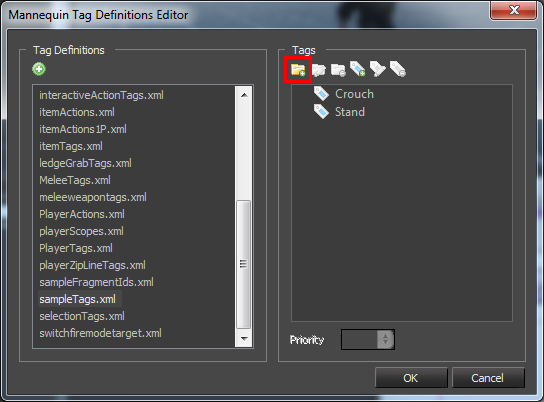
И даем ему имя, которое хотим. В нашем случае Стэнс.
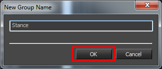
Затем нам просто нужно перетащить теги «Присесть» и «Стоять» в группу «Стойка».
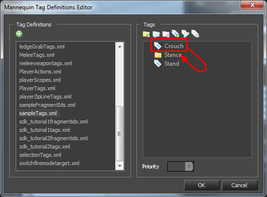
Два тега в одном определении тега не могут иметь одно и то же имя. Даже если они в разных группах.
Мы не можем использовать отсутствие тега для выделения фрагмента. Например, если мы хотим пометить фрагменты, которые будут выбраны при нет присел, нам нужно будет закодировать такое состояние в «NotCrouched» или аналогичном теге. Точно так же нет поддержки тегов «логическое или», в настоящее время мы поддерживаем только «логическое и».
Присвоение тегов фрагментам.
Когда мы редактируем фрагмент, мы можем установить теги, которые мы хотим, чтобы он имел для его выбора. Если double щелкнуть фрагмент, чтобы отредактировать его в браузере фрагментов, таблица свойств под ним позволит выбрать теги, которые мы хотим ему присвоить.
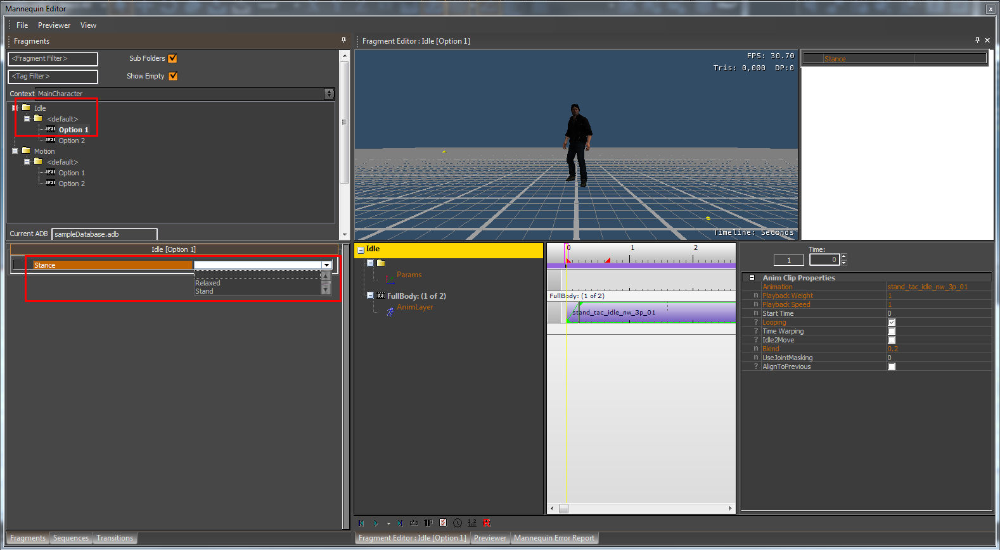
Обратите внимание, что когда мы меняем теги, браузер фрагментов отражает этот факт, помещая фрагмент в подпапку с именем тега.
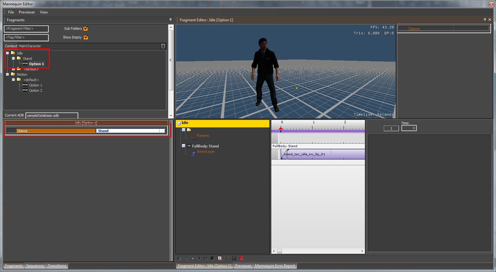
Мы можем повторить это, чтобы каждый фрагмент был классифицирован соответствующим тегом Stance.
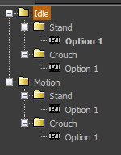
Обычно у нас есть более одного тега. Более сложный пример может выглядеть ближе к этому:
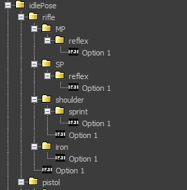
Детали выбора фрагмента
(см. конкретную статью Процесс выбора фрагмента подробнее)
Когда действие устанавливается в области действия, оно пытается найти фрагмент, который должен воспроизводиться на нем.
Ему потребуется выполнить запрос к базе данных анимации (связанной с областью действия через контекст области видимости), чтобы найти фрагмент, который лучше всего соответствует запросу. Информация запроса представляет собой комбинацию идентификатора фрагмента, тегов и индекса параметра.
Чтобы разрешить этот запрос, база данных анимации просмотрит свои записи, соответствующие fragmentId, и вернет первый тот, который он находит, где все теги записи в базе активны в тегах, указанных в запросе.
Каждая запись в базе данных представляет собой набор фрагментов с одинаковыми тегами (опциями). Чтобы решить, какой фрагмент этого набора параметров возвращается в результате запроса, используется индекс параметра (по модулю количества параметров) для получения одного фрагмента набора.
Записи в базе данных упорядочены в зависимости от приоритета их тегов, поэтому первое совпадение и лучшее совпадение одинаковы. Теги с более высоким значением приоритета имеют более высокий рейтинг. Фрагмент с одним тегом с приоритетом 2 имеет более высокий приоритет, чем фрагмент с двадцатью тегами с приоритетом 1. Фрагмент с двумя тегами с приоритетом 1 имеет более высокий приоритет, чем фрагмент с одним тегом с приоритетом 1. Порядок между двумя фрагментами с одинаковым количеством тегов с одинаковым распределением приоритета не определен.
Поскольку поиск наилучшего совпадения в базе данных во многом зависит от ранжирования фрагментов и их порядка, важно иметь четкое представление о том, как это выглядит. Мы можем увидеть порядок фрагментов в базе данных, сняв флажок «Показать папки» на панели фрагментов.
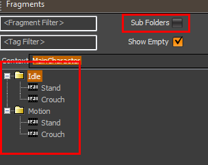
Приоритет тега можно установить в редакторе определения тега, выбрав тег. Поскольку порядок хранения фрагментов в базе данных зависит от приоритетов тегов, изменение приоритетов тегов может потребовать повторного сохранения баз данных.
Расширенный (несколько областей): при наличии фрагмента, который занимает несколько областей, он пытается запросить и установить фрагмент. один раз для каждого контекста области. Например, если мы берем на себя FullBody+UpperBody, запрос и установка будут выполняться в области Fullbody и пропускать UpperBody, поскольку они относятся к одному и тому же контексту области.
Если у нас есть несколько областей действия, мы можем связать тег с областью действия, чтобы в этой области воспроизводился другой фрагмент. В этом случае тег области становится частью обязательных тегов в запросе к базе данных для этой области. Это означает, что области, с которыми связаны теги, имеют свои собственные фрагменты.
Хорошие практики работы с фрагментами
В нашей базе данных теперь есть все наши фрагменты, помеченные тегами Stance или Crouch. Если бы мы сейчас запустили наш пример программы с базой данных в текущем состоянии и запросили «Idle» fragmentId, мы бы не получили соответствующий фрагмент. Это связано с тем, что в нашем коде мы не устанавливаем никаких тегов в контексте анимации, поэтому у нас нет фрагмента, все теги которого были бы активны в глобальных тегах персонажа.
Отсутствие совпадения может быть допустимым вариантом использования, но мы должны быть осторожны. Важно не допустить, чтобы это произошло по ошибке на всех (базовых) слоях тела, поскольку это может привести к тому, что наши персонажи перейдут в Т-позу. Мы можем гарантировать, что этого никогда не произойдет, имея некоторый фрагмент по умолчанию, к которому всегда можно обращаться. В нашем случае мы можем удалить тег Stand, чтобы они стали фрагментами по умолчанию для нашего fragmentIds.
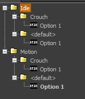
Столь же верное решение — сохранить теги такими, какими они были раньше, и продублировать достаточно общие фрагменты и сделать их фрагментами по умолчанию. В нашем случае это будут фрагменты с тегом «Стенд».
Изменение состояния глобального тега.
Чтобы изменить состояние глобального тега из кода, чтобы отразить наше логическое состояние, мы должны сделать это через контекст анимации, который мы создали во время инициализации объекта.
// Example on how to set the Crouch tag on the global animation context
CRY_ASSERT( m_pAnimationContext );
const TagID crouchTagId = m_pAnimationContext->state.GetDef().Find( "Crouch" );
if ( crouchTagId != TAG_STATE_INVALID )
{
const bool enableTag = true;
m_pAnimationContext->state.Set( crouchTagId, enableTag );
}
Если мы поместим этот код после запуска «Idle» fragmentID в примере кода (поставленного в очередь в контроллере действий, и контроллер действий разрешил его во время своего обновления), мы увидим, что персонаж не воспроизводит фрагмент с тегом «приседать». Это связано с тем, что Mannequin не будет изменять текущий фрагмент, если об этом явно не попросят. Действия нужно поставить в очередь и установить (или нужно вызвать SetFragment внутри действия), чтобы текущий фрагмент изменился, и только потом фрагмент помещается в области видимости для воспроизведения.
У нас есть несколько способов убедиться, что мы всегда воспроизводим лучший фрагмент для конкретной ситуации. В нашем случае мы хотим, чтобы при каждом изменении состояния глобального тега автоматически воспроизводился наилучший из возможных фрагментов «Idle». Есть два разумных способа достижения этой цели: мы можем определить на уровне fragmentId, что всегда должно воспроизводиться наилучшее возможное совпадение, или мы можем написать некоторый код в действии, чтобы всегда выбирать лучший фрагмент для текущей ситуации.
Если мы хотим применить его на уровне fragmentId, нам просто нужно отредактировать fragmentId в редакторе и выбрать опцию автоматического обновления.
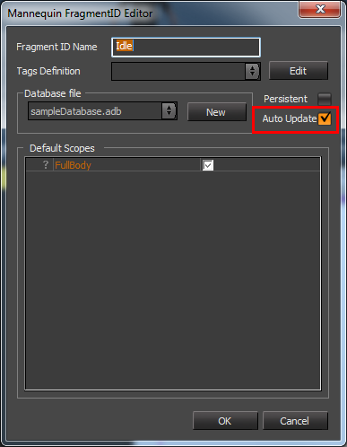
Если мы предпочитаем получить больше контроля, нам нужно написать собственное действие. При каждом обновлении нашему действию необходимо проверять, есть ли фрагмент лучше, чем воспроизводимый в данный момент. Если это так, то ему необходимо запросить новый фрагмент. Действие может повторно поставить себя в очередь, вызвав SetFragment, поэтому нет необходимости создавать новое действие внутри действия:
class CSampleAction
: public TAction< SAnimationContext >
{
public:
typedef TAction< SAnimationContext > TBase;
CSampleAction( int priority, FragmentID fragmentId = FRAGMENT_ID_INVALID, TagState fragTags = TAG_STATE_EMPTY, uint32 flags = 0, ActionScopes scopeMask = 0, uint32 userToken = 0 )
: TBase( priority, fragmentId, fragTags, flags, scopeMask, userToken )
{
}
virtual EStatus Update( float timePassedSeconds )
{
// Remember to call the base Update function!
TBase::Update( timePassedSeconds );
const IScope& rootScope = GetRootScope();
const bool foundBetterMatchingFragment = rootScope.IsDifferent( m_fragmentID, m_fragTags );
if ( foundBetterMatchingFragment )
{
SetFragment( m_fragmentID, m_fragTags );
}
return m_eStatus;
}
};
Мы можем поставить в очередь это действие этого класса вместо постановки в очередь одного из классов по умолчанию.
IActionPtr pAction = new CSampleAction( actionPriority, idleFragmentId );
m_pActionController->Queue( pAction );
Код, который мы написали в методе Update нашего специального действия, очень похож на то, что делает IAction::Update, когда текущий фрагмент помечен как автоматическое обновление. Существенное отличие состоит в том, что с помощью нашего пользовательского кода мы реализуем это ограничение (лучший матч всегда будет воспроизводиться) не на уровне fragmentId, а на уровне действия. У обоих есть свои преимущества: полезно иметь возможность использовать функцию автоматического обновления, потому что мы можем использовать ее с любым пользовательским действием без необходимости явного добавления кода, показанного выше, и она становится управляемой данными, поскольку мы зависим от определений fragmentId. Что касается основного недостатка, пользовательские действия не могут легко override выполнять автоматическое обновление для FragmentId. Если это ограничение приемлемо, рекомендуется использовать флаг автоматического обновления вместо того, чтобы писать проверку «IsDifferent» самостоятельно.
Начальные фрагменты движения
Чтобы достичь нашей первой цели — управления состояниями анимации персонажа «Idle» и «Motion», нам нужно поставить в очередь «Motion» fragmentID, когда наш персонаж движется, и «Idle» fragmentID, когда наш персонаж неподвижен.
Есть два основных места, где может быть уместно добавление такой логики управления.
- Внешняя логика управления — это запуск действий: логика движения нашего персонажа контролируется сущностью (например, через конечный автомат), и эта логика управления может запускать действия, как мы это делали для действия «Простой».
- Внутренняя логика действий — это настройка фрагментов: логика движения нашего персонажа по-прежнему должна управляться сущностью так же, как и в предыдущем случае, но управление логикой анимации оставлено на усмотрение пользовательского действия. В нашем случае мы можем написать специальное действие, которое будет учитывать состояние нашей сущности (движется она или неподвижна?), а затем задавать соответствующий fragmentID, индекс опции, теги для конкретного фрагмента и т. д.
В конце концов, мы обычно используем комбинацию того и другого: логика управления более высокого уровня отвечает за общее действие, которое должно быть запущено, а внутренняя логика действий отвечает за специфическую логику анимации, которая может не принадлежать логике более высокого уровня.